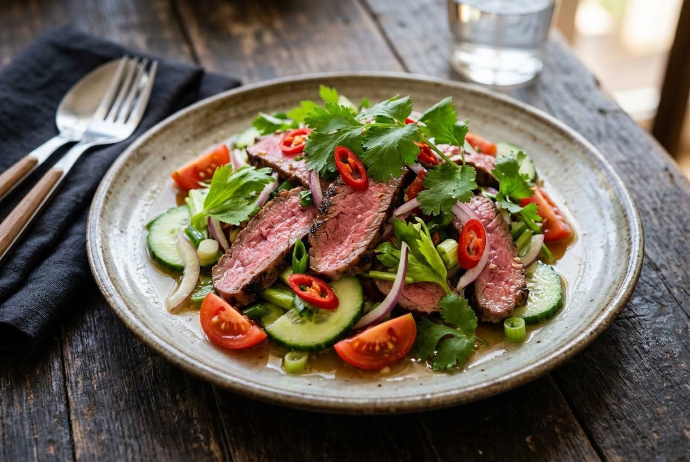

Grilled sirloin, rested and sliced against the grain, dressed warm with a pounded lime-fish-chilli paste balanced in the bowl before it ever touches the meat.

On Pantip, a son with leftover grilled beef asked his mother how to make the dressing. She gave him the family method — a little sugar, warm water, some chillies, lime "until you like it," fish sauce. He followed it, found the result inedible, kept adding lime and fish sauce to fix it, and watched it get sloppier. His verdict, posted for the whole forum: "She cooks many dishes well, but her yum is not good."
The thread is the dish's real recipe: the dressing is the entire skill. The balance — sour-hot-salty with sweet rounding — is fixed in a bowl, tasted, and corrected before the meat goes in. The replies name the three ways to ruin it: lime squeezed into hot liquid turns bitter; lime squeezed hard enough to crush the peel turns bitter; and a broken balance can't be fixed by adding more. Phol Tantasathien, the Top Chef Thailand judge, publishes the same logic as his own recipe — a pounded paste, a balanced dressing, beef dressed while warm.
| Thai | English | Amount |
|---|---|---|
| เนื้อวัวสันนอก | Beef sirloin | 200 g |
| น้ำปลา | Fish sauce — for the rub | 1 tsp |
| พริกไทยดำ | Black pepper — for the rub | to season |
| กระเทียมไทย | Thai garlic — for the paste | 10 cloves |
| รากผักชี | Coriander root | 1 tsp |
| พริกชี้ฟ้า (แกะเม็ด) | Red spur chilli, deseeded | 1 |
| พริกขี้หนูสวน | Bird's eye chillies | 5 |
| น้ำมะนาว | Lime juice | 2 tbsp |
| น้ำปลา | Fish sauce — for the dressing | 2 tbsp |
| น้ำตาลมะพร้าว | Coconut sugar | 2 tsp |
| แตงกวา | Cucumber | 1 |
| หอมใหญ่ | Onion | 50 g |
| มะเขือเทศ | Tomato | 1 |
| ขึ้นฉ่าย | Celery, cut into pieces | 20 g |
| ต้นหอม | Spring onion, cut into pieces | 20 g |
| ผักชี | Coriander leaves | 2 tbsp |
The cut. Sirloin is the clean pick; rump, flank and ribeye all appear. The rule is a cut that grills pink and slices clean.
The vegetables. Celery in (Phol) or out; mint in or out; some versions run cucumber-tomato-onion only.
The dressing base. A pounded paste (Phol) against sliced garlic and chillies stirred straight into the lime-fish-sugar. The paste distributes better; the sliced version is brighter.
Sugar. Coconut sugar, palm sugar, white sugar — all standard, in small amounts.
Isaan-style. Some add toasted rice powder, which nudges the dish toward its minced cousin, larb. Without it, the salad stays in the yum family.
This recipe is translated from the following Thai-language sources. Where they disagree, we've said so.
1. Phol Food Mafia — "Grilled Beef Spicy Salad (ยำเนื้อย่าง)" by Phol Tantasathien (Top Chef Thailand judge) — pholfoodmafia.com
2. Pantip thread 32779380 — "ทำ 'น้ำยำ' ยังไงให้อร่อย เด็ด แซ่บ" (the dressing-failure thread, bitter-lime lessons) — pantip.com
3. ครัวตุ๊กตา (Bloggang, 13 Mar 2016) — "ยำเนื้อย่างแซบๆ" (home version) — bloggang.com
4. Kapook — "ยำเนื้อย่าง เมนูกับแกล้มแซ่บนัว พร้อมสูตรน้ำยำอย่างเด็ด" (Isaan-style variant) — cooking.kapook.com